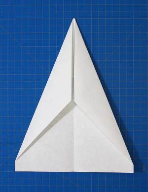
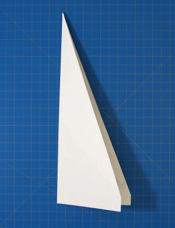
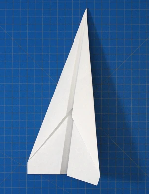

1Step 1
Crease the sheet down the middle.
Crease the sheet down the middle.

Open it flat, then tuck both top corners into the midline.

Bring the upper long edges in until they meet the centre crease.

Close the model in half along its length.

Fold each wing down so its edge lines up with the belly of the fuselage.
With a calm day and a level throw, expect roughly 17–23 metres (about 56–75 feet). Among the 37 distance-rated designs in this collection it ranks #5. Wind, paper weight, and small crease errors all change the result.
A well-trimmed Basic Dart should hold about 3–4 seconds of hang time. That places it #33 of 36 designs for time aloft. Launching from a higher spot and keeping the wings level will extend it.
It is best for far, straight throws. Folding skill is beginner. Use Letter & A4, 5 steps, hands only.
Hold the plane level and throw with a smooth, firm push, aiming straight ahead rather than upward.